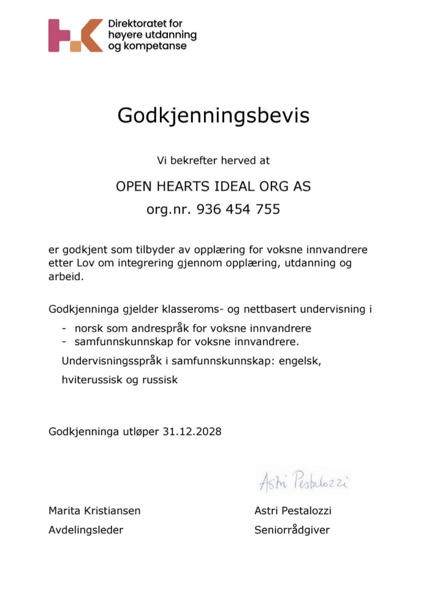
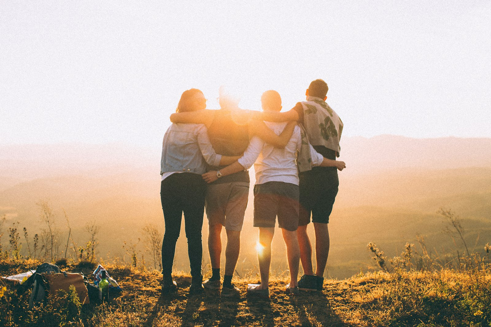

Om
oss
Open Hearts Ideal Org AS er et ideelt aksjeselskap uten kommersielt formål. Vi arbeider for like muligheter, fellesskap og nye muligheter for mennesker i ulike livssituasjoner.
Teamet
Ledelse og administrasjon, frivillige lærere — og en maskot.

Markus Ribe
Daglig leder. Ansvar for daglig drift, organisering og videre utvikling av virksomheten.

Lena Ribe
Prosjektleder og regnskapsfører. Prosjektkoordinering, økonomi og regnskap, oppfølging av aktiviteter og samarbeid.
Malannia Schasnovich
Frivillig norsklærer.
Elena Nikolaeva
Frivillig norsklærer.

Puzik — maskot og ambassadør →
Bidrar til en varm, trygg og inkluderende atmosfære på utvalgte arrangementer fra september 2026.
Hva vi gjør
Virksomheten omfatter voksenopplæring, norskopplæring, integrering og tiltak for personer som står utenfor arbeids- og samfunnslivet. Vi styrker voksnes muligheter til læring, arbeid og aktiv samfunnsdeltakelse — gjennom utdanning, kompetanseutvikling, grunnleggende ferdigheter og livslang læring.
Gjennom innovasjon, digitalisering, samarbeid og kunnskapsdeling bidrar vi også til sosial, økonomisk og miljømessig bærekraft, i tråd med FNs bærekraftsmål.
Godkjenning for opplæring
Open Hearts Ideal Org AS er godkjent som tilbyder av opplæring for voksne innvandrere etter integreringsloven. Godkjenningen gjelder klasseroms- og nettbasert undervisning i norsk som andrespråk og samfunnskunnskap. Undervisningsspråk i samfunnskunnskap: engelsk, hviterussisk og russisk. Gyldig til 31.12.2028.
Se listen hos HK-dir ↗
Godkjenningsbevis
Samarbeid
Livet Vil Vinne
Fra 9. mars 2026 samarbeider vi med Livet Vil Vinne — et initiativ som sprer håp, styrke og nye muligheter for mennesker som går gjennom tøffe tider.
Les mer